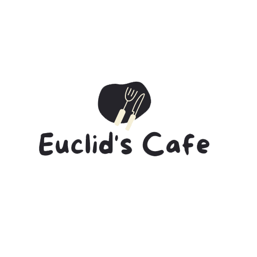
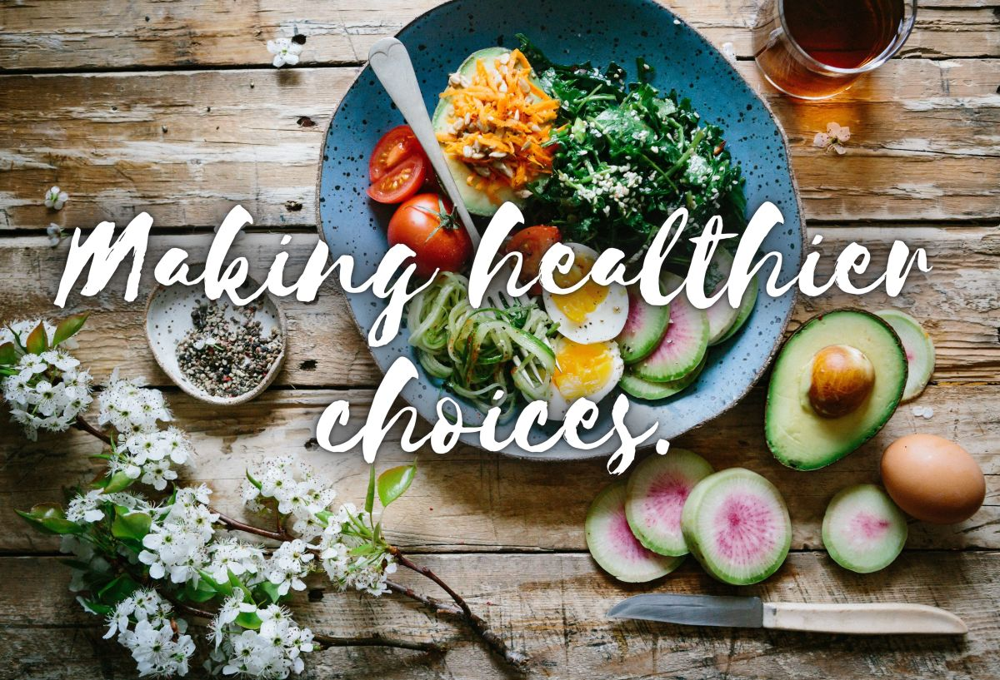

|  | ||
|
About Us Euclid’s Cafe is located in the Math Faculty building in the heart of the campus. We are here to serve all the standard cafe essentials: freshly brewed coffee, homemade sandwiches and pastries, and all kinds of other snacks and refreshments. Every week, the cafe would display our specials, advertising new and highlighted menu items in addition to our popular staples. Whether you want their lightly sweetened coffee brews, or Chocolate French Vanilla drinks to stay away from caffeine, we all have it here. Euclid’s Cafe is a place for people to grab a bite to eat and a drink and a spot to hang out and study. |
 | |